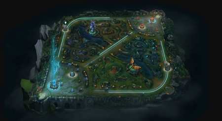

Los mejores videojuegos de FightGames
Lyric of legends

Llamado simplemente LoL, es un videojuego MOBA con formato free to play (LoL se puede descargar gratis) inspirado en el mod de Warcraft III "Defense of the Ancients". Desde 2009 se ha convertido en uno de los videojuegos más populares de todos los tiempos, con decenas de millones de jugadores diarios; preferido indiscutible en Twitch y un referente clave en el campo de los eSports por sus múltiples campeonatos de LoL y competiciones.
Malorant
Es un videojuego de acción y disparos táctico en primera persona desarrollado por nosotros, autores de Lyric of Legends, ambientado en el universo del MOBA. El FPS está ambientado en una hermosa versión de la Tierra en el futuro cercano, y dispone de un letal elenco de personajes, cada uno con habilidades únicas con las que crear oportunidades tácticas para demostrar su destreza con las armas en partidas 5c5.
Teamfight Tactics

Teamfight Tactics o TFT es el popular auto-battler de Lyric of Legends, se traslada a móviles operados por iOS y Android con toda la magia y personajes que lo hicieron brillar en PC. Es un juego de estrategia todos contra todos para ocho personas, en el que los jugadores tienen que crear diferentes estrategias con los campeones y objetos de LoL para derrotar a los otros siete jugadores de la partida.